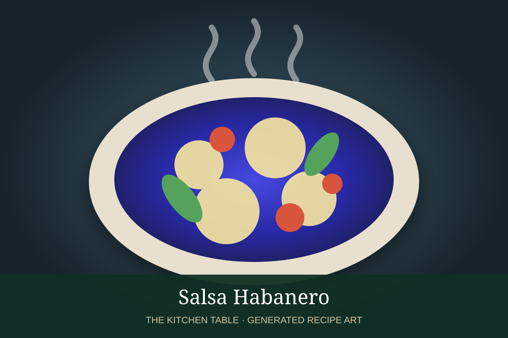

← Back to all recipes
SAUCE · MEXICAN
Salsa Habanero
A fiery Yucatán-style habanero salsa with citrus, onion, garlic, and salt.
20 minMakes about 1 1/2 cups

Photo: Pati Jinich
Ingredients
- 4 to 6 habanero chiles
- 1/2 white or red onion
- 3 garlic cloves
- 1/3 cup sour orange juice, or equal parts orange and lime juice
- 1 tbsp neutral oil
- 1 tsp kosher salt
Preparation
- Char habaneros, onion, and garlic in a dry skillet or comal.
- Cool slightly and remove pepper stems.
- Blend or pound with citrus juice and salt.
- Whisk in oil if desired for a slightly emulsified texture.
- Serve sparingly; this salsa is very hot.